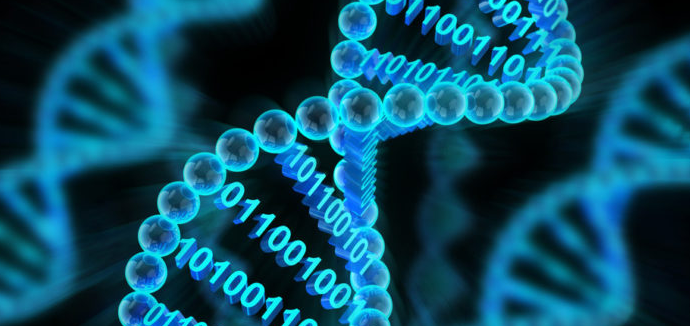
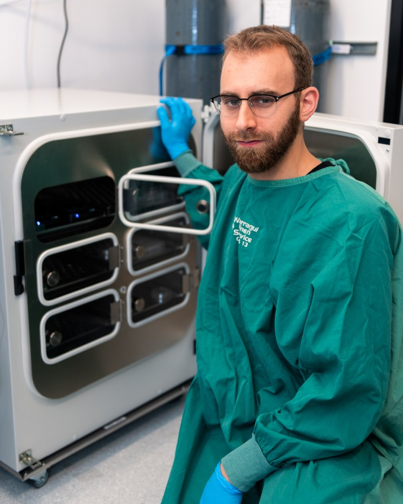

OI(Organoid Intelligence)와 바이오 컴퓨터(Bio computer)
구글 홈페이지 영상 보기정의(definition)
- OI(Organoid Intelligence)란? 오가노이드는 인간의 장기(Organ)에 '유사하다'는
뜻의 접미사 'oid'를 더해 만들어진 용어이다. OI는 오가노이드 기술을 활용해 만든 인공지능이다. - 바이오 컴퓨터(Bio computer)란? 인간의 뇌에서 이루어지는 고도의 정보처리 시스템을 모방하여 만든 컴퓨터이다.
사례(example)
“저희가 한 일은 뇌세포가 ‘퐁(Pong)’이라는 게임 세계에서 동작하도록 시뮬레이션한 것입니다.
성공 여부를 보여주기에는 퐁 게임이 명쾌하고 좋았죠.” 호주의 생명공학 기업인 ‘코티컬 랩스’의 최고과학책임자(CSO) 브렛 케이건 박사는
5월 12일 과학동아와의 화상 인터뷰에서 뇌세포 실험에 게임을 쓴 이유를 이렇게 설명했다. 퐁은 1972년 처음 발매된 고전 아케이드 게임이다.
탁구처럼 화면 이리저리 튀어 다니는 공을 판으로 쳐서 반대편으로 날려 보내면 된다. 판으로 공을 되받아치지 못하면 게임 오버다.
케이건 박사팀은 작년 말 발표한 논문에서 배양 접시에서 키운 뇌세포인 ‘접시뇌(DishBrain)’를 컴퓨터에 연결해 퐁을 플레이하도록 학습시켰다.
접시뇌는 5분 만에 퐁을 하는 방법을 익혔다. 비교를 위해 인공지능(AI)에게 퐁을 학습시켰을 때는 90분이 걸렸는데, 18배나 빨리 학습한 것이다.
자료 출처: https://m.dongascience.com/news.php?idx=60036
| 바이오 컴퓨터의 퐁게임 실험과정 | |
|---|---|
 |
step 1 접시뇌 제작 전기신호를 주고 받을 수 있는 미세전극판 위에 신경세포를 배양해 접시뇌를 제작한 뒤 위쪽은 입력 영역 아래쪽은 출력 영역으로 나누었다. |
| step 2 접시뇌와 컴퓨터 게임 연결 입력 영역에는 공과 면 사이의 거리를 전기신호로 입력하고 출력 영역에서는 나온 신호로 면을 움직이도록 컴퓨터와 연결한다. |
 |
 |
step 3 되먹임 회로 제작(Feedback 회로) 흰 공을 되받아치면 그런 신호를 출력한 뇌세포 연결이 강해지도록 긍정적 자극을 줬다. 판이 흰 공을 되받아 치는데 실패하면 해당 신호를 출력한 뇌세포 연결은 약해지도록 했다. |
| step 4 되먹임 회로 반복 3번 과정을 반복하면 게임을 잘하는 뇌세포 연결이 강화되고 게임을 못하는 연결이 약해진다. 그 결과 접시뇌가 퐁게임을 잘할 수 있게 된다. |
 |
의의와 한계(significance and limitation)
| 의의점 | 한계점 |
|---|---|
| 자연과의 조화: 생명과학과 정보기술의 융합을 통해 자연과 조화롭게 기술을 발전시킬 수 있는 가능성을 열어준다. |
연산 속도와 안정성: 현재의 바이오 컴퓨터는 전통적인 실리콘 기반 컴퓨터에 비해 연산 속도가 느리며, 안정적인 연산을 보장하기 어렵다. |
| 고밀도 데이터 저장: DNA는 그 구조적 특성상 엄청난 양의 데이터를 작은 부피에 저장할 수 있다. |
복잡한 제작 및 유지보수: 바이오 컴퓨터를 제작하고 유지보수하는 과정은 매우 복잡하고 비용이 많이 든다. |
| 병렬 처리 능력:
바이오 컴퓨터는 생체분자의 특성을 이용해 동시에 여러 연산을 수행하는 병렬 처리 능력을 갖추고 있어 전통적인 컴퓨터와 비교했을 때 특정 연산 작업에서 훨씬 더 빠른 처리 속도를 제공할 수 있다. |
한정된 응용 분야: 바이오 컴퓨터는 특정 분야에서만 효과적으로 활용될 수 있다. |
| 저전력 소비: 바이오 컴퓨터는 생물학적 시스템을 기반으로 하기 때문에 전력 소모가 매우 적다. |
윤리적 문제: 생체분자를 이용한 컴퓨팅 기술은 윤리적 문제를 야기할 수 있다. |